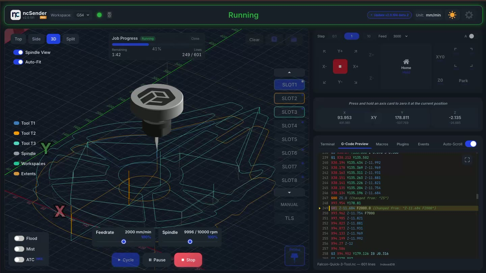
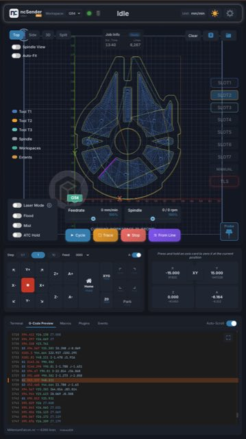

ncSenderncSender is a cross-platform controller for grblHAL machines — a 3D visualizer, jogging, probing, tool management and plugins in one app, on the desktop or a touchscreen at the machine.

A job is three steps that keep repeating. ncSender puts each one a tap away, and never makes you leave the screen to do the next.
The 3D visualizer renders the whole toolpath with the toolhead following along live. Top, side, 3D and split views, workspace markers, a tool legend per bit, and out-of-bounds detection that flags a job that won't fit before you press Cycle.

Pick the probe, pick the corner on the picture, start. Every routine drives the probe to the reference and sets the workspace offsets for you — with a connection test first, so a mis-wired probe is caught before anything moves.
Feed, rapid and spindle overrides live on the main screen. The DRO shows work and machine position side by side, with press-and-hold to zero an axis. Program events let a macro fire on start, pause, stop or tool change, and the G-code preview highlights the line being cut.
Each accessory pairs to a single Wireless USB dongle, reports its own status, and updates its firmware from inside ncSender — over the cable when one is plugged in, over the air when it isn't.
The gateway. One dongle on the host talks to every other accessory over ESP-NOW — no Wi-Fi setup, no router in the loop.
A handheld with a screen and an encoder wheel. Jog, zero, probe, home and swap workspaces without walking back to the computer.
A wireless touch probe and tool setter on one battery. Sleeps on its own, wakes when it touches something, tells the app its charge.
A dust boot that lifts itself out of the way for probing and tool changes, then drops back down to cut.
A light strip that follows the machine state — and tracks the spindle along X so you can see where it is from across the shop.
Every accessory is built and sold by Francis Creation.
Connect over USB or Ethernet. ncSender reads the controller's own settings and alarm tables, so the firmware pages and error messages match what your board actually runs.
USB and Ethernet · settings editor with the board's own descriptions · alarm and error tables read from the controller · tool changer plugins
Open source. Everything you need to visualize, jog, probe and run a job.
Everything in Community, plus the features a production machine leans on.
Plugins install from inside the app and add their own screens, macros and G-code. A few of the ones that ship today:
Automatic tool changes with a rack
Cup and fork racks, TLS after home
Square a workpiece to the axes
Probe a surface, cut to its shape
Simple cuts without a CAM program
Generate finger joints
Repeat a job across a grid
Builds for Windows, macOS (Apple Silicon and Intel) and Linux (x64 and ARM64), and a ready-to-boot Raspberry Pi 5 image for Pro.
A CNC controller for grblHAL.
© 2026 Francis Creation. Community edition is open source under a dual licence; Pro is a commercial edition.